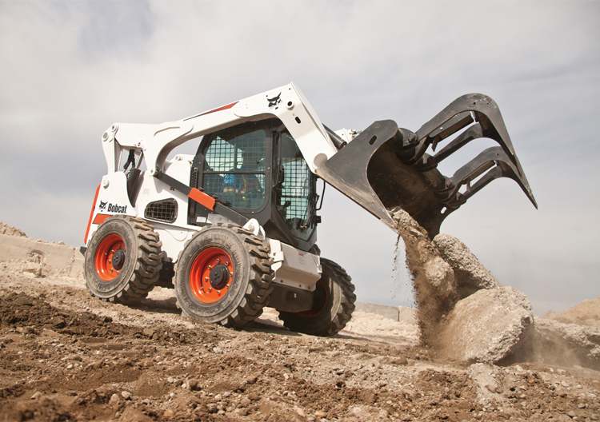
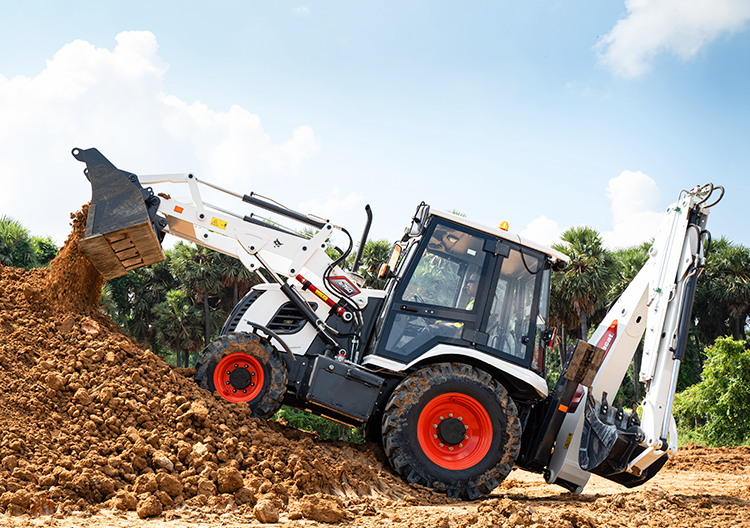
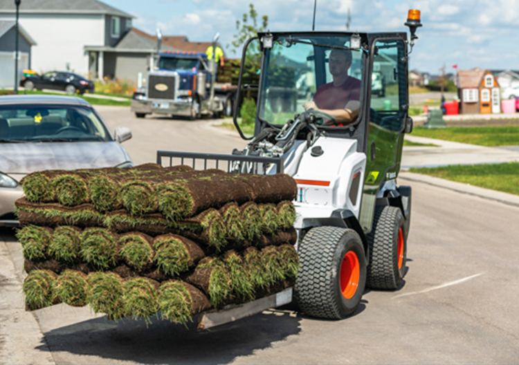
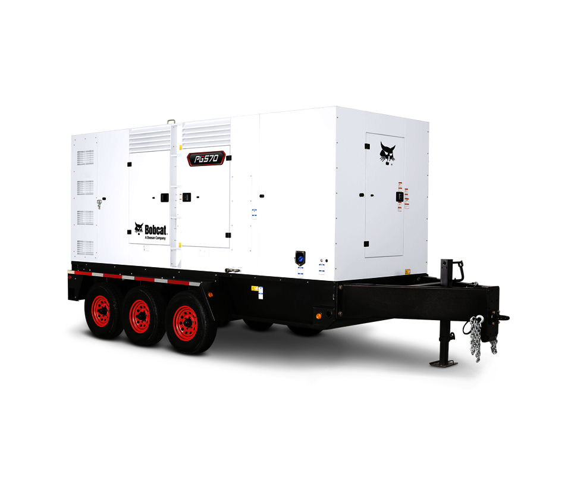
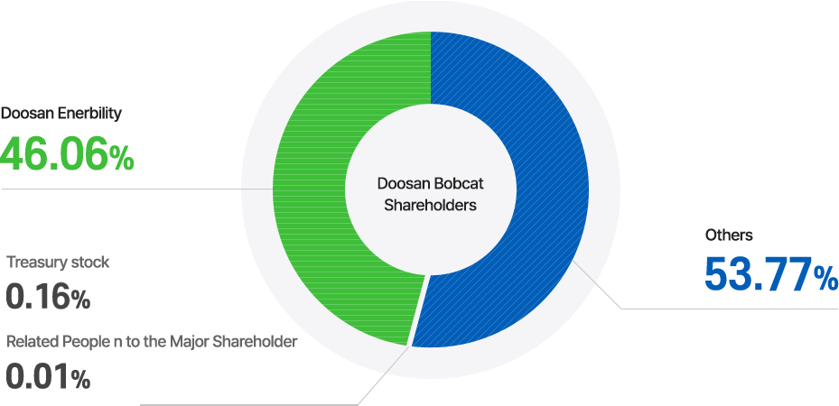

Products
.png)
Compact Loders
We’re well known for our loaders - probably because we invented the world’s first skid-steer loader. Our loaders have set the standard for “tough” that other brands are measured against. Superior performance, excellent maneuverability and all-day comfort maximize productivity.
Main Products
skid-steer loader

No matter what the job or worksite, Bobcat Company offers more skid-steer loader models, attachments and options to help get the job done right. Each loader provides consistent results, is easy to operate and provides excellent all-around visibility and comfort.
Backhoe Loders
Backhoe Loders
Backhoe Loaders are versatile, and can be configured to suit different jobs and applications by coupling them with Bobcat optional attachments for both backhoe and loader parts. Whatever the application – digging, trenching, breaking and material handling, etc. – Bobcat Backhoe Loaders have the strength to handle it efficiently.
Small Articulated Loaders
Small Articulated Loaders
Bobcat's small articulated loaders deliver impressive lifting capacity in the form of a compact, turf-friendly machine. An articulation joint offers maneuverability in tight work spaces while limiting damage to established surfaces, thereby minimizing the need for time-consuming repairs
Portable Power
Generators
Portable Power’s mobile generators are engineered to provide the highest reliability while lowering the total cost of ownership. These innovative generators are easy-to-use, quiet, and meet all the demands of critical applications in the harshest conditions
History
E.G. Melroe and sons open a factory in Gwinner, N.D. Bobcat releases the first production model of the current Skid-Steer loader. The first Skid-Steer loader is invented and first introduced. The new Skid-Steer loader is given the name “Bobcat” to represent toughness, quickness, and agility. Clark Equipment Company purchases the company from Melroe. Bobcat becomes the first manufacturer to build Compact Excavators in North America. 1995 ~ 2014 1995 Clark Equipment Company is sold to Ingersoll Rand Company. "Melroe Company" name is officially changed to "Bobcat Company". Bobcat acquires Sambron and launches the telehandler. Bobcat Company becomes part of Doosan Group. Bobcat becomes the first manufacturer to produce more than 1,000,000 loaders. Doosan Infracore Bobcat Holdings Co., Ltd is established. 2015 ~ 2024 2015 The Company name is changed to Doosan Bobcat Inc. Doosan Bobcat is listed on KOSPI. 2017 Bobcat relocates the headquarters of EMEA to the Czech Republic. Bobcat introduces its first Backhoe Loader in India, and its Compact Tractor in the U.S. 2019 Doosan Bobcat acquires the ground care business - including mowers, tractors, sod cutters - from Schiller Grounds Care, Inc. Doosan Bobcat acquires Material Handling's business. Doosan Bobcat expands its product portfolio with Bobcat-branded material handling,industrial air, portable power and turf renovation equipment. 2024 Doosan Bobcat acquires Doosan Mottrol
Chief Executive Officer
scott park
Investors
Sustainability
Social Responsibility
Education & Internship Program
We recruit from 15 colleges, hiring more than 150 students per year to work at our offices and manufacturing facilities across North America. Students take a semester off and devote eight months of full-time work to hands-on projects at Doosans Bobcat. In 2020, we added an apprenticeship program in our operating facilities.
Doosan Bobcat Equipment Used for Disaster Simulation Sites
In 2021, we entered a new partnership with the National Disaster Search Dog Foundation (SDF), a nonprofit organization committed to strengthening disaster response in the U.S. by training highly skilled canine and handler search teams. The partnership spotlights SDF’s National Training Center in Santa Paula, California, where shelter dogs are trained to become rescue dogs.
Contact Us
|
|
|---|